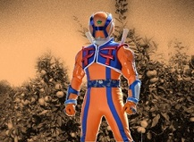

安芸の国東部、みかん島の長に男の子 が産まれ、幸せに暮らしていた。
まだその男の子が幼いころ、敵である[暗黒破壊軍団オダーク]による広島攻撃があり、武術の達人のしゃも爺と共に、結界の張られた厳島に逃れ
ることになる。その後みかん島の人々は、オダークによりその姿を木に変えられた。
[暗黒破壊軍団オダーク]の再攻撃は、必ずあると確信したしゃも爺。
成長した男の子に自らの持てる術を伝承させるべく、修行の道へと入る。
厳しい修行により、平和を愛し守る「心」と、究極の拳法「広島拳」を伝授された長の子。
時は経ち、暗黒破壊軍団オダークが厳島の結界に向けて猛攻撃を行った際、ヒロシマックスとして覚醒。
この戦いでしゃも爺を失った彼は、オダークとの果てしない戦いの道を誓う。